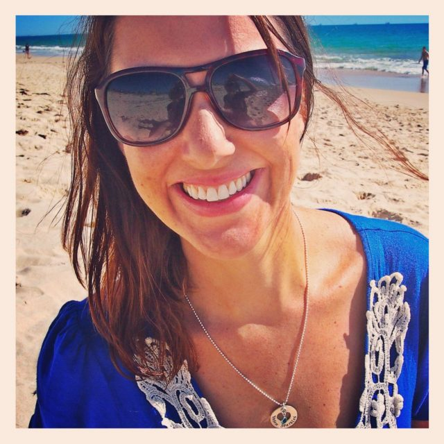

MY VEGAN STORY: REBECCA “BEX” WELLER OF VEGAN SPARKLES
September 5, 2013 It’s time for another vegan story! Today, I am so excited to have the delightful, incredible, and dare I say sparkly Rebecca Weller (though many of you know her as “Bex”) of one of my favorite blogs, Vegan Sparkles! If you’ve visited her blog you know how she radiates warmth and positivity, which is what drew me to her in the first place. I stayed for all of the delicious food! I’ve had the pleasure of meeting Bex and her equally wonderful significant other while she was on holiday here in the U.S. and I can honestly say she is one of the most positive, happy people I’ve ever met. She has been such an inspiration to me and I hope you will enjoy her vegan story as much as I do.

WHAT FIRST INSPIRED YOU TO GO VEGAN?
I’d always been a little disturbed by the idea of eating animals and was vegetarian on and off for years, but the final inspiration to embrace veganism came when I began to research factory farming. Not wanting to contribute to a world like that, I was inspired to follow my heart and make a huge life shift.
DESCRIBE YOUR TRANSITION TO VEGANISM.
I’m a bit of a geek and I was quite nervous about making the transition so I decided on a two-step approach. I assigned September 2011 as my ‘practice’ or ‘experiment’ month where I researched ingredients and vegan alternatives and practiced living without my beloved cheese and Starburst lollies. I read vegan blogs for cooking inspiration and even started my own blog to help keep me on track. Then on October 1st 2011, I embraced veganism whole-heartedly. I found that having that practice month made the transition so much easier as I’d spent time educating myself and had weaned myself off my food addictions. By the end of that October I felt amazing and had dropped excess weight effortlessly. I was sleeping better and felt more in tune with my intuition and knew I’d made the right decision.
WHAT RESOURCES HELPED YOU IN YOUR TRANSITION?
Watching Earthlings was a huge catalyst in my transition and I often watch and re-watch food documentaries including Vegucated, Food Matters, Fat, Sick & Nearly Dead, Forks Over Knives, and Food Inc. Reading vegan food blogs (including Kristy’s!) was such a huge help to me in the beginning when I didn’t really know any other vegans or how to prepare vegan food. I learnt so much and am so grateful for the incredible friendships I’ve made with other vegan bloggers during this journey.
WERE YOUR FRIENDS AND FAMILY SUPPORTIVE OF YOUR CHOICE TO GO VEGAN? IF THEY WERE NOT SUPPORTIVE, HOW DID YOU DEAL WITH THEM? ARE THEY MORE SUPPORTIVE NOW?
My friends and family were quite resistant to it at first but I think that was more a case of being worried about me and wondering how we’d manage family dinners. They quickly changed their tune once I began cooking for them and they discovered how delicious and nutritious vegan food is. These days they are big supporters and regularly cook vegan food too – often better than me!
HOW LONG HAVE YOU BEEN VEGAN NOW?
My 2 year veganniversary is coming up on October 1st and I’m planning to bake a very gooey vegan cake to celebrate! And a big, gooey smoothie!
IF YOU COULD GIVE YOUR NEWLY VEGAN SELF ONE PIECE OF ADVICE, WHAT WOULD IT BE?
Honey girl, you will discover SO many foods better than the highly processed cheese and sweets you believe you can’t live without right now. Keep cooking, reading and experimenting. This is just the beginning of an incredible life transformation for you.
LINK LOVE
website: http://vegansparkles.com/
twitter: https://twitter.com/vegan_sparkles